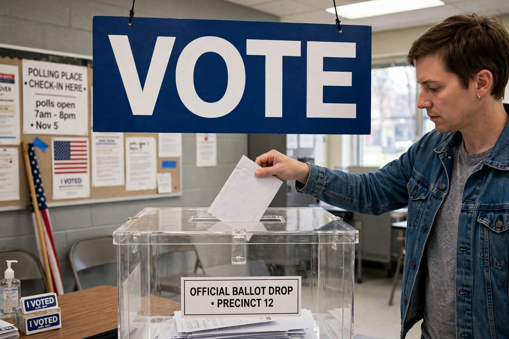

Clean elections is a term used in the United States for systems of full public financing of political campaigns, in which candidates who demonstrate broad grassroots support by collecting a specified number of small qualifying contributions (typically $5) receive a grant from a public fund to run their campaigns. In exchange, participants agree to spending limits and to forgo most private contributions.

Maine adopted the first clean elections law by ballot initiative in 1996 (the Maine Clean Election Act, effective 2000), followed by Arizona's Citizens Clean Elections Act in 1998. Connecticut adopted the Citizens' Election Program in 2005 after the corruption scandal surrounding Governor John Rowland. Variations operate in other states and municipalities; New York City's matching-funds programme (matching small donations 8-to-1) is a partial model, and Seattle's "democracy vouchers" (2017) give residents public vouchers to donate.
In Arizona Free Enterprise Club v. Bennett (2011), the Supreme Court struck down "trigger" matching funds that gave participating candidates extra money when privately financed opponents or independent groups spent above a threshold, holding that the mechanism burdened speech. The core grant systems in Maine, Arizona and Connecticut survived, and their funds were restructured without triggers.
Supporters say clean elections reduce candidates' dependence on large donors and increase competition; high participation rates in Connecticut and Maine suggest candidates find the systems workable. Critics argue public money should not fund campaigns and that independent spending after Citizens United has undercut spending limits' effectiveness.
See also: Political funding · Bipartisan Campaign Reform Act · Democracy voucher